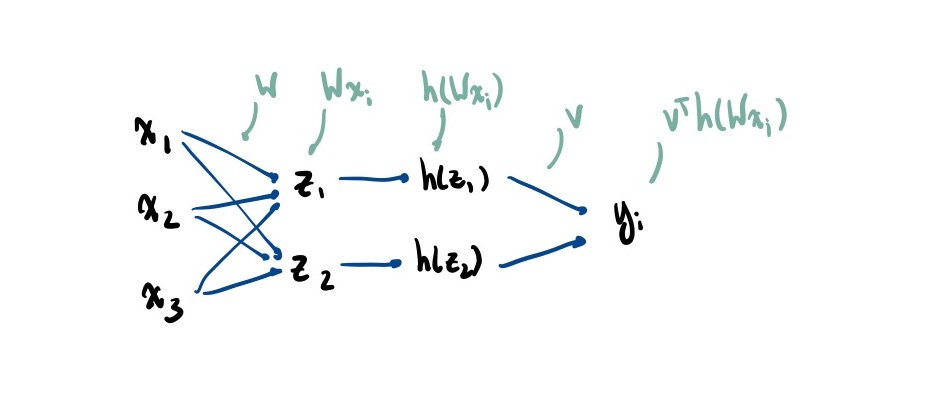
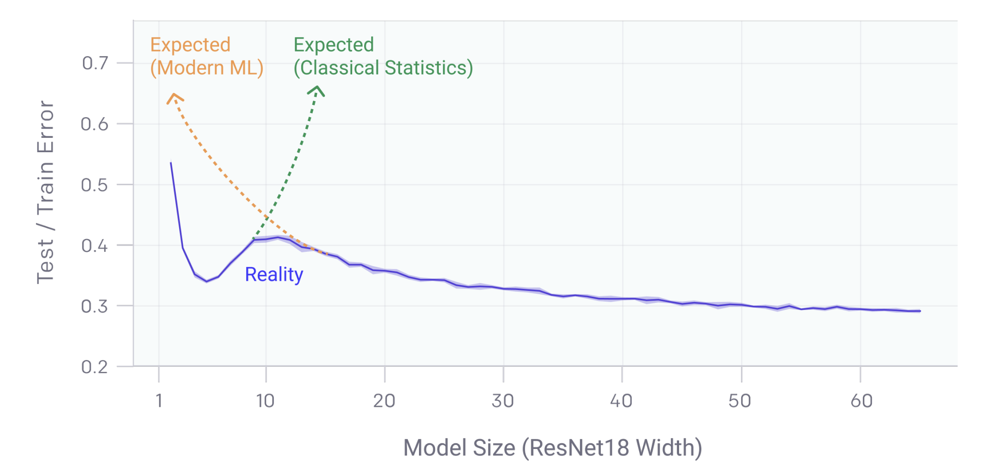

See also: convolutional neural networks
Shallow Networks
Many domains require non-linear transforms of the features (see: change of basis). Usually not obvious which transform to use.
Neural network models try to learn good transformations. Whereas latent-factor models train the embedding and model separately, neural networks learn both features and the model at the same time.
Let be the number of hidden units. Generally, (or, with bias, )

Artificial neural network:
- is measurement of the world
- is internal representation of world
- Each can be viewed as binary feature: do we care about it or not?
- Use sigmoid as a smooth approximation
- is output of neuron for classification/regression
Parameters: the (k,d) matrix , and (k) vector . To turn this into multi-class classification, we modify into a (k’, k) matrix (where k’ is the number of classes) and convert to probabilities by computing the softmax of the values
Losses:
Training
Generally non-convex as W and v are both variables. As such, finding the global optimum is NP-Hard. We can use Stochastic Gradient Descent (SGD) but this is not guaranteed to reach a global optimum due to non-convexity.
Implicit Regularization
Often, increasing , the number of hidden units, improves test error. This seems at odds with the fundamental tradeoff, doesn’t it?
However, learning theory (trade-off) results analyze global min with worst test error. The actual test error for different global minima will be better than worst case bound. Among the global minima, SGD is somehow converging to “good” ones! Empirically, using SGD is like using L2-Regularization, but the regularization is “implicit”.
With small models, “minimize training error” leads to unique (or similar) global mins. With larger models, there is a lot of flexibility in the space of global mins (gap between best/worst).
We get results that look like the following:

Deep Learning
Instead of a single layer of hidden units, we can stack them.
Vanishing Gradient Problem
The gradient of the sigmoid function away from the origin is nearly zero. This is worse when you take the sigmoid of a sigmoid of a sigmoid…
If these are numerically set to 0 because of how small they are, Stochastic Gradient Descent (SGD) will not make progress
This is partially solved by replacing the sigmoid activation with the ReLU activation. Alternatively, can also use skip connections that ‘shortcuts’ between layers
Philosophy of Deep Learning
Most commentators agree that current deep learning methods fall short of implementing general intelligence, and it remains an open question as to whether some modification of current deep learning methods will be able to do so (more of a question of intelligence)
Self-learning algorithms like AlphaZero (which learns from self-play) seem to disprove/vindicate the empiricist approach (need real world experience to learn) . The counterargument here is that systems like AlphaGo have built in knowledge about the rules of Go and mechanisms to explore possible outcomes one at a time (e.g. Monte Carlo Tree Search for the solution space)
Brain-like networks
- Biological similarities
- CNNs have high sensitivity to spots, edges, and bars in specific orientations
- This echoes the work of hubel and wiesle (1962) which found similar patterns in the feline visual cortex
- Both systems have created a system of internal representations that corresponds to important distinctions and structures in the outside world
- Neural networks have decently high fault tolerance (some redundant neurons)
- May help to explain functional persistence of brains in the face of minor damage. In a large network, a loss of a few neurons will not make a huge impact, but the quality of its computations will progressively degrade (this is why network distillation still works)
Differences
- Real neural networks aren’t fully connected like ANNs
- Real neural networks have horizontal cell-to-cell connections within a given layer which are not present in ANNs
- Real brains don’t use backprop via generalized delta rule
- Back prop requires
- computing partial derivates to minimize error
- propagating deltas through the network back to relevant connections
- There is little empirical evidence for this in biological brains
- Back prop requires
- Real brains show a progressive reduction in reaction time as one learns
- Not seen in ANNs where error decreases but prediction time remains constant
- Supervised require a ‘global truth’ or teacher. These ‘perfect’ signals are not present in the real world
- So far, unsupervised learning has been vastly inferior to supervised approaches